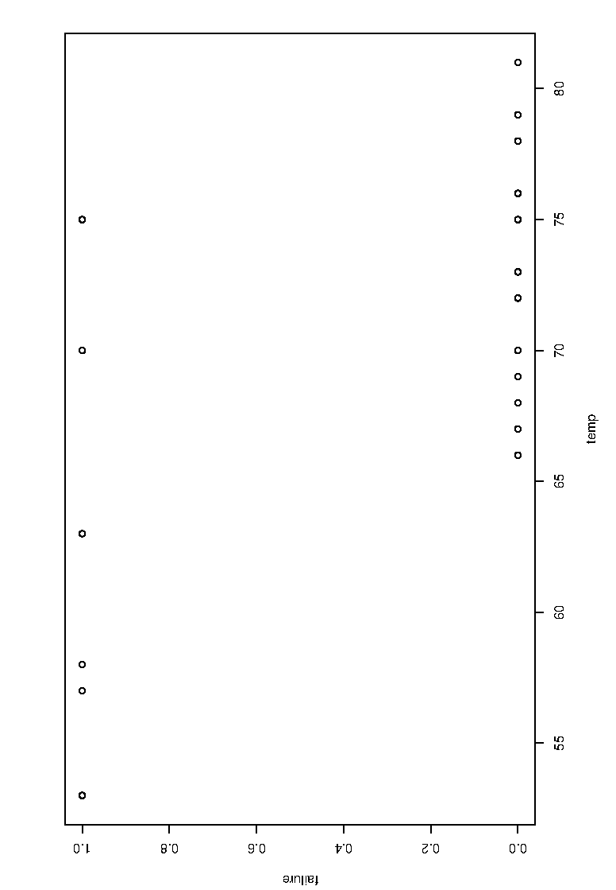
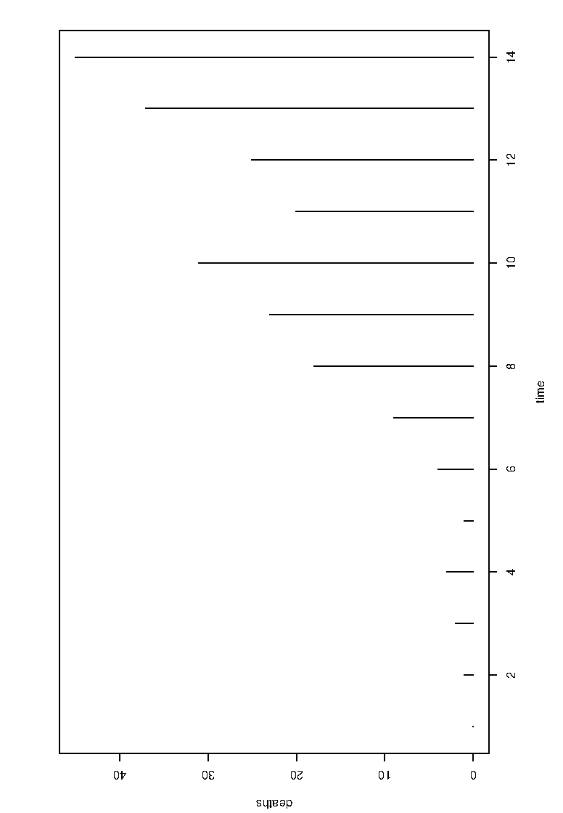
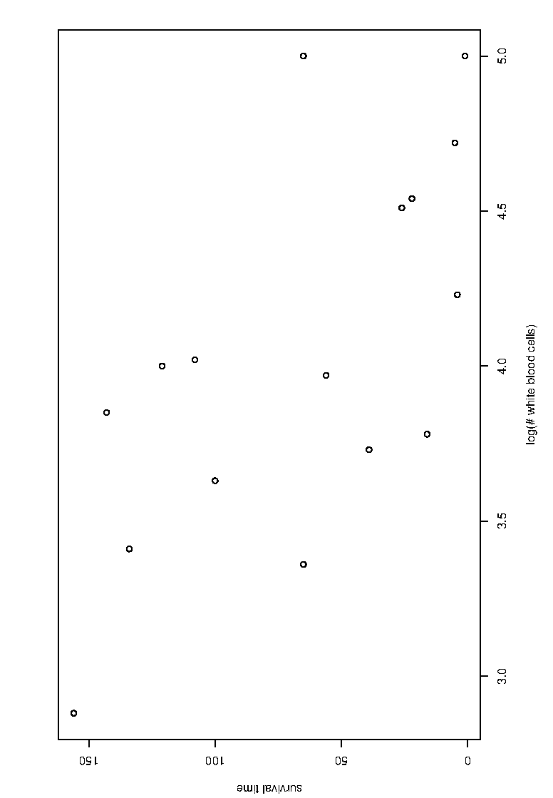
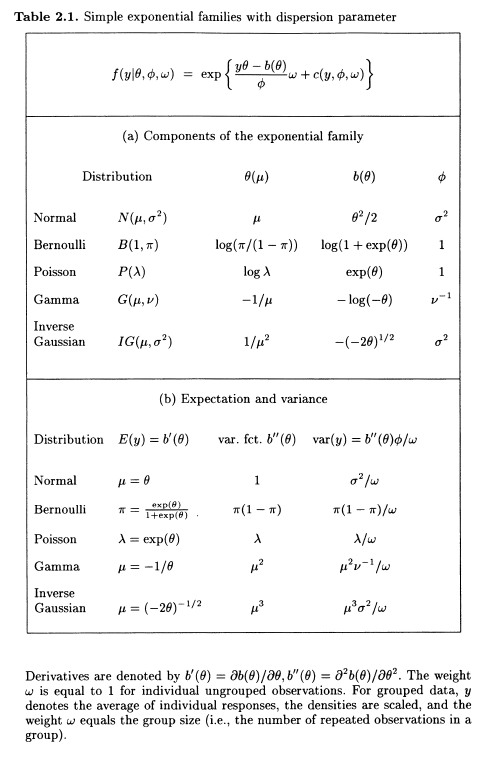
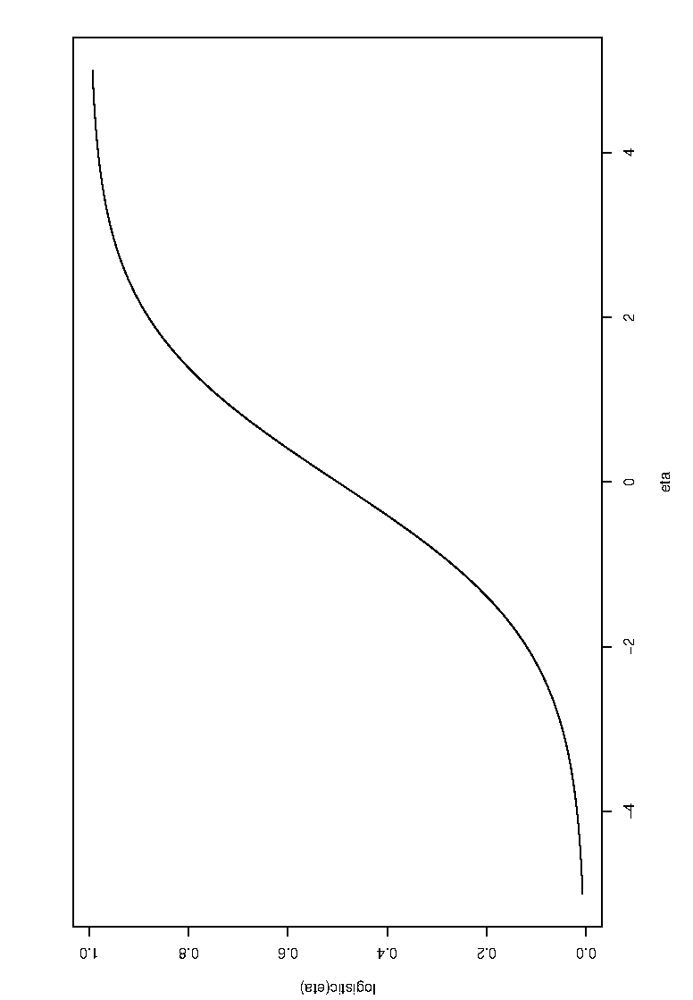
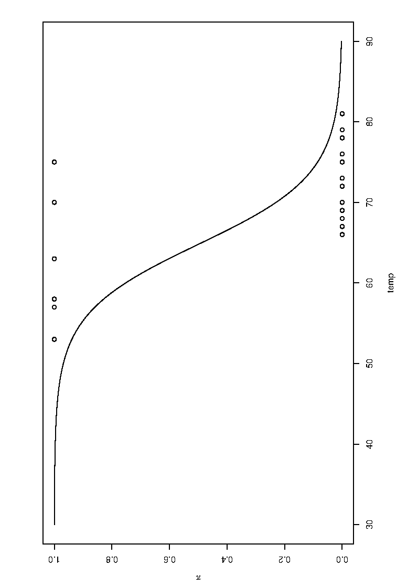

In this lecture, we will motivate the need for generalized linear models (GLMs) by considering limitations of the linear model. This will involve details of the exponential family of distributions, before considering the definition of GLM. Examples involving logistic and Poisson regression will be considered.
This presentation follows essentially the developments in Fahrmeir, L. and Tutz, G., Multivariate Statistical Modelling based on Generalized Linear Models, Springer, 2001.
This is also available via the library.
Suppose that we have one or more predictors \(\boldsymbol{x^T}= (x_1, \ldots, x_p)\) and one univariate response variable \(y\). These may be continuous or categorical.
Given data \((\boldsymbol{x}_i, y_i)\), \(i=1, \ldots, n\), our aim is to find a model between predictors and responses.
As we have seen from lectures 1 and 2, the linear model has that \[y_i= \boldsymbol{x}_i^T\boldsymbol{\beta}+ \epsilon_i\] or equivalently, \[E(y_i|\boldsymbol{x}_i) = \boldsymbol{x}_i^T\boldsymbol{\beta}.\] Is the linear model capable to deal with all “one-level” problems? The answer is of course “no”, as we will see with the following examples.
Example 1: Temperature (\({\,}^{\circ}F\)) at time of take-off and occurrence/non-occurrence (1=yes, 0=no) of an “O-ring”-failure at the 23 U.S. space shuttle flights prior to the Challenger disaster of January 20, 1986.

Example 2: Cases of death due to AIDS in Australia in 14 successive quarters from Jan 1983 to Jun 1986.

Example 3: For 17 leukaemia patients, the survival time after diagnosis is provided in dependence on of the base 10 logarithm of the white blood cell count (at time of diagnosis).

Limitations of the linear model
For all three examples, the range of the response variable is restricted e.g. \(\{0,1\}\) in example 1, the natural numbers in example 2 and the positive reals in example 3. Consequently, we cannot use a normal distribution to model these responses.
We wish to be able to model responses from a wide range of distributions. Almost all commonly used distributions are members of the exponential family.
The probability density function (pdf, in the continuous case), or probability mass function (pmf, in the discrete case), of exponential family random variables takes the form \[f(y|\theta, \phi )=\exp\left\{\frac{y\theta-b(\theta)} {\phi}+c(y,\phi)\right\}\] where \[\begin{array}{ll} \theta&\mbox{is the natural parameter of the family,}\\ \phi&\mbox{is a scale or dispersion parameter and}\\ b(\cdot)\;\mbox{and}\;c(\cdot)&\mbox{are specific functions corresponding to}\\ &\mbox{the type of the family.}\\ \end{array}\]
Example: Normal distribution
For a normal (also known as Gaussian) distribution, we have the pdf \[\begin{array}{lcl} f(y) &=& \frac{1}{\sqrt{2 \pi}\,\sigma} \mbox{exp} \left\{-\displaystyle\frac{1}{2}\left(\frac{y-\mu}{\sigma}\right)^2\right\}\\ &=& \mbox{exp} \left\{\displaystyle \frac{y\mu-\mu^2/2}{\sigma^2}- \frac{y^2}{2\sigma^2}- \mbox{log}\left(\sqrt{2\pi}\; \sigma\right)\right\}. \end{array}\] Therefore,
\(\theta = \mu\),
\(b(\theta) = \theta^2/2 = \mu^2/2\),
\(\phi = \sigma^2\).
Example: Bernoulli distribution
For a Bernoulli distribution, we have the probability mass function (pmf) as \[\begin{array}{lcl} f(y) &=& \pi^y (1-\pi)^{1-y}\\ &=& \exp\left\{y \; \mbox{log}\left(\displaystyle\frac{\pi}{1-\pi}\right) + \mbox{log}(1-\pi)\right\} \end{array}\] where \(\pi = P(y=1)\) is the probability for "success". This is an exponential family with
\(\theta = \mbox{log}(\pi/(1-\pi))\)
\(b(\theta) = \mbox{log}(1+\mbox{exp}(\theta)) = - \mbox{log}(1-\pi)\),
\(\phi = 1\).
Other exponential family distributions include (but are not limited to) Binomial, Poisson, Geometric, Negative Binomial, Gamma and Exponential distributions.
Page 21 of Fahrmeir and Tutz gives the table on the next page.

Let \(\mu_i=E(y_i|\boldsymbol{x}_i)\). A generalized linear model is determined by
the type of the exponential family which specifies the distribution of \(y_i|\boldsymbol{x}_i\),
the form of the linear predictor \(\boldsymbol{x}_i^T\boldsymbol{\beta}\), i.e. the selection and coding of covariates,
the transformation \[\begin{equation} \label{FB} \mu_i=h(\boldsymbol{x}_i^T \boldsymbol{\beta}),\quad \mbox{equivalently} \quad %\end{equation*} %or equivalently %\begin{equation}\label{FC} g(\mu_i)=\boldsymbol{x}_i^T\boldsymbol{\beta}, \end{equation}\] where \[\begin{array}{ll} h&\qquad \mbox{is a known one-to-one \textit{response function},}\\ g&\qquad \mbox{is the \textit{link function}, i.e. the inverse of $h$.}\end{array}\]
The natural link (function) Several choices of the link function can be considered, but the most common choice is the natural or canonical link \[g(\cdot)=\theta(\cdot)\] which is uniquely determined by the respective exponential family, and can be directly read from the exponential family density. For instance, for Poisson responses one has \(g(\cdot)=\log(\cdot)\).
For Gaussian responses, \(\theta(\cdot)\) is the identity function and so the natural link is the identity link. In other words, the usual Gaussian linear model is a special case of the generalized linear model!
For data \((\boldsymbol{x}_i, y_i)\), with a \(\{0,1\}\)-valued response, we are interested in modelling the probability of “success”, \(\pi_i=P(y_i=1|\boldsymbol{x}_i)\).
One has \[\pi_i=P(Y_i=1|\boldsymbol{x}_i)= E(y_i|\boldsymbol{x}_i) = \mu_i\] so that the binary regression model can be generally formulated as \[\pi_i=h(\boldsymbol{x}_i^T\boldsymbol{\beta}).\]
Now, recall that for the Bernoulli distribution, the pmf is \[f(y) = \exp\left\{y \; \mbox{log}\left(\displaystyle\frac{\pi}{1-\pi}\right) + \mbox{log}(1-\pi)\right\}\] Hence, the natural link for the Bernoulli distribution is the so-called logit link \[g(\pi)= \mbox{log}\left(\displaystyle\frac{\pi}{1-\pi}\right),\] and the corresponding response function is \[h(\cdot) = g^{-1}(\cdot)= \frac{\exp(\cdot)}{1+\exp(\cdot)}.\] Binary regression using the logit link is known as logistic regression.
The logistic response function \(h(\boldsymbol{x}_i^T\boldsymbol{\beta})= \frac{\exp(\boldsymbol{x}_i^T\boldsymbol{\beta})}{1+\exp(\boldsymbol{x}_i^T\boldsymbol{\beta})}\) is shown below.

The figure shows clearly how the linear predictor range \(\boldsymbol{x}_i^T\boldsymbol{\beta} \in (-\infty, \infty)\) is mapped to \((0,1)\).
Example 1 revisited: Here \(\boldsymbol{x}_i^T\boldsymbol{\beta} = \beta_0+\beta_1\mbox{temp}_i\), \(y_i= 1\) if failure and 0 otherwise.
shuttle <- read.table("https://andygolightly.github.io/teaching/MATH43515/shuttle.asc", header=TRUE)
head(shuttle)
## flight temp td
## 1 1 66 0
## 2 2 70 1
## 3 3 69 0
## 4 4 68 0
## 5 5 67 0
## 6 6 72 0glm1<- glm(td~temp, family=binomial(link=logit), data = shuttle)
glm1
##
## Call: glm(formula = td ~ temp, family = binomial(link = logit), data = shuttle)
##
## Coefficients:
## (Intercept) temp
## 15.0429 -0.2322
##
## Degrees of Freedom: 22 Total (i.e. Null); 21 Residual
## Null Deviance: 28.27
## Residual Deviance: 20.32 AIC: 24.32We see that \(\boldsymbol{x}_i^T\hat{\boldsymbol{\beta}}= 15.0429- 0.2322\mbox{temp}_i\).
Hence, the probability of failure in dependence of the temperature is \[\hat{\pi} = \frac{\exp(15.0429-0.2322\mbox{temp})}{1+\exp(15.0429-0.2322\mbox{temp})}.\]
On the day of the accident, the temperature was 31F.

predict(glm1, newdata= data.frame(temp=31), type="response")
## 1
## 0.9996088 The model fit would have told us that \[\hat{P}(y=1|x=31) = \hat{\pi}= {0.9996088} \qquad (!!!)\]
The complimentary lecture slides also include an example on Poisson regression.
GLMs are an extremely powerful device to fit models to a wide range of response types. In practice, GLMs are not more difficult to fit than LMs — just use the glm function in R. However, a bit of knowledge is needed to understand what the fitted models actually mean, and how the parameters needs to be interpreted.